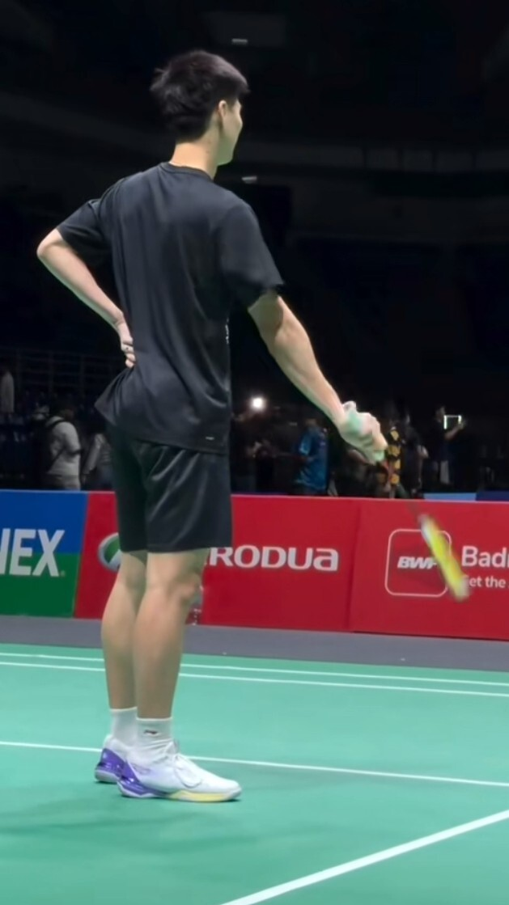
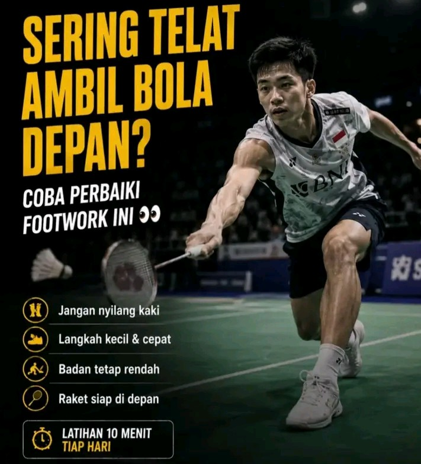
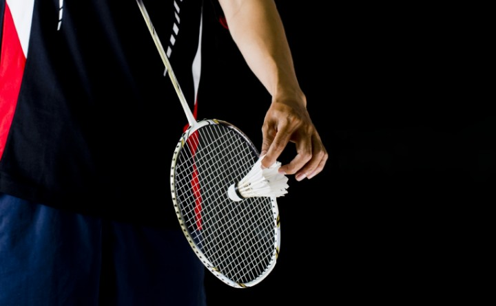
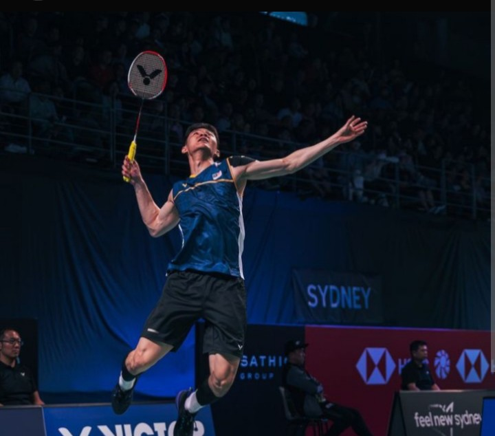
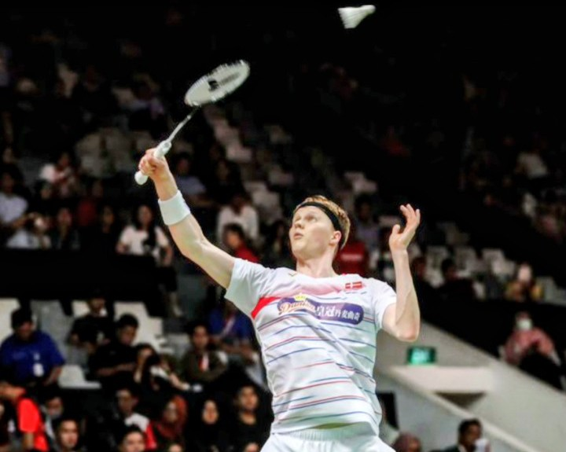

Kuasai teknik dasar bulu tangkis untuk menjadi pemain yang tak terkalahkan. Klik tombol panah untuk mulai belajar!

Teknik paling awal. Terdiri dari Forehand Grip (seperti bersalaman) dan Backhand Grip (ibu jari menekan rata pada permukaan gagang yang lebar).

Footwork yang lincah mengatur posisi tubuh agar selalu ideal saat memukul kok. Kunci utamanya adalah menjaga keseimbangan dan kelenturan kaki.

Pukulan awal untuk memulai permainan. Bisa berupa servis pendek (sering untuk ganda) atau servis panjang melambung tinggi (sering untuk tunggal).

Pukulan menyerang yang keras, tajam, dan menukik cepat ke area lapangan lawan. Membutuhkan kekuatan pergelangan tangan dan lompatan yang pas.

Pukulan tipuan yang meluncur halus melompati net dan jatuh dekat di area depan lawan. Mirip gerakan smash tetapi dilakukan dengan sentuhan lembut.